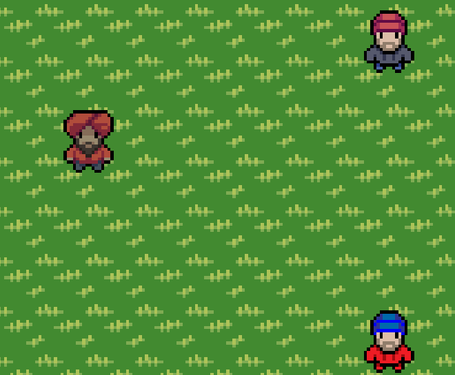
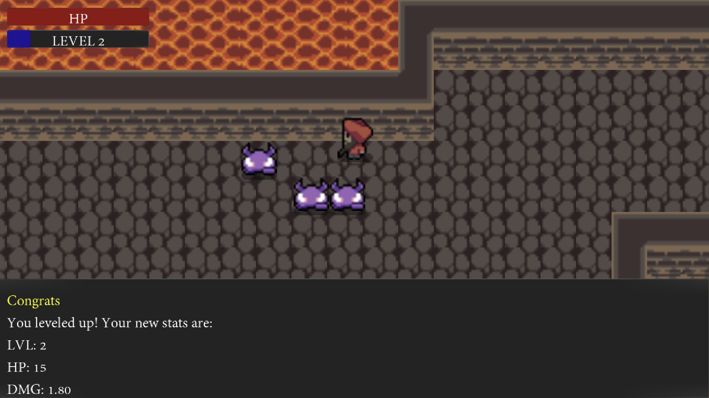
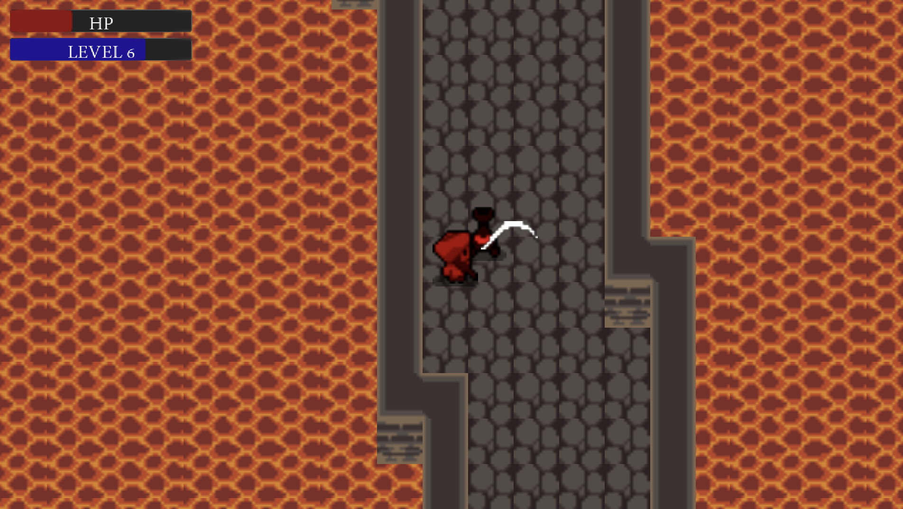

Work Experience
Student Athlete Mentor at Grinnell College Athletics Department
2024 - Present
- Selected by Grinnell administration as one of two mentors for the Grinnell Baseball team.
- Extensively trained in resources for student and athlete wellbeing.
- Provide regular socio-emotional coaching, support, and mentoring to the baseball team, as well as individual students.
Computer Science Tutor at Grinnell College CS Department
2024 - 2025
- Work with students identified by faculty as needing additional support in Computer Science.
- Utilize active listening and supportive coaching strategies to build student confidence and competence in relevant content.
U18 Assistant Baseball Coach at Kitsap Ospreys
2024 - 2026
- Instructed players Taught the intricacies on the nuances of high-level baseball in group and one-on-one settings.
- Counseled players on individual improvement opportunities based on player goals.
- Participated in decision-making with head coaches on team composition, based on assessment of program needs and player strengths.
Intern at Grinnell College Immersive Experiences Lab
2024 - 2024
- Involved in the design process with a historian, devs, and a project manager to create a historically accurate viking experience.
- Worked in an agile development cycle to fulfill an NEH grant request.
BYB Tournament Staff at Lakeshore Chinooks
2022 - 2023
- Worked closely with security and tournament site managers to ensure a safe and secure environment for all fans.
- Informed coaches and umpires of rules, sites, and procedures.
- Helped fans to navigate concessions and tickets.
Personal Trainer at Self-Employed
2021 - Present
- Create personalized workouts to fit clients' needs.
- Work one-on-one with clients to help them achieve their physical goals, while teaching the basics of training safely.
Contract Animator at Self-Employed
2020 - 2020
- Retained to create an anecdotal animation for a national health consulting firm.
Projects
RPG & Dungeon Crawler Tutorial
Work your way through a series of layers on this RPG dungeon crawler heavily inspired by the GameMaker RPG tutorial. Early version more to come soon!!!
- My introduction to making games with the GameMaker engine. I made this project as a way to learn the engine and to share what I learned with others.


